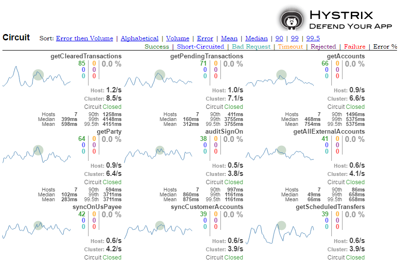

Kubernetes
in
Production
Tom Larrow
 | ≈ |  |
| ≈ |
About our Devops Journey
| youtu.be/xgSkva_Eq5s | youtu.be/XW5E5E5RUJg |
So what has Kubernetes meant for us
So how do we use it?
Build Pipeline
Whlie the Jenkins master is on its own server, almost all jobs build run inside docker containers in Kubernetes
The number of build slaves can easily be increased/decreased
pipeline {
agent {label 'swarm'}
stage('Gulp'){
agent {
docker {
image "$REGISTRY/openshift/nodejs-olb:latest"
reuseNode true
}
}
steps {
sh "gulp olb"
}
Run Unit Tests
Build new docker container
deploy it to testing environment
a new image into the registry
stage('Docker Build and Push'){
steps {
sh "docker build -t $DOCKERTAG_UT ."
sh "docker push $DOCKERTAG_UT"
VerifyDeployment("olb")
}
}
triggers:
- type: ConfigChange
- type: ImageChange
imageChangeParams:
automatic: true
containerNames:
- olb
from:
kind: ImageStreamTag
name: 'olb:ut'
the depolyment config
readinessProbe:
httpGet:
path: ibxolb/olb/index.html
port: 8080
scheme: HTTP
initialDelaySeconds: 10
timeoutSeconds: 1
periodSeconds: 10
successThreshold: 1
failureThreshold: 3
Run Selenium Tests
- Over 5000 tests
- Run from a docker container
- Selenium Hub and 20 executors in
- Directly hitting the service
- Roughly 12 minutes to run
- All in Kubernetes
Push to Dev Environment
stage("push to DV"){
steps{
sh "docker pull $DOCKERTAG_UT"
sh "docker tag $DOCKERTAG_UT $DOCKERTAG_DV"
sh "docker push $DOCKERTAG_DV"
VerifyDeployment("olb")
}
}
Move Pods to higher environments
- Move all containers together
- If image hasn't changed, pods don't roll
- Done today with separate jobs in Jenkins
- Moving to a more formal release/deployment application
Mobile Application
- Mobile App is HTML5 using most of same codebase
- Deploy to testing environment in Kubernetes
- Selenium testing in phone sized browser window
- In higher environment package application and test
Configuration
- OpenShift has configuration templates
- This allows customization per environment
- Several open source projects exist for templating Kubernetes
- ktmpl https://github.com/InQuicker/ktmpl
Sidecars
 Multiple containers can make up a pod
Multiple containers can make up a pod
Grafana
Hygieia
Hygieia
Developers can click on an environment in their Hygieia dashboard and see exactly the code revision that is in each enironment.Hystrix
Hystrix in Grafana
Create Exectutive Dashboard from Hystrix data (10:30pm)Delivery Speed
- Dramatically Reduced delivery time of major application
- Performed 10 deployments during first 4 days of go live, while under record load
- Rolling Deployments with no customer impact
Testing and Quality
- Over 21 million tests run inside our Selenium grid
- Reduced 2 weeks of manual testing to 12 minutes of automated tests
- Many automated tests could cover both web and mobile apps
Improve Incrementially
Not only your code, but also your environmentWhat would we do differently?
- A least 4 application nodes
- Maybe not Jenkins
- Better evangilization and communication about capibilities
What's Next?
What's Next?
- Expand The Cluster
- Vendor Containers
- Databases
- Grid Improvements
- New Deployment Tool